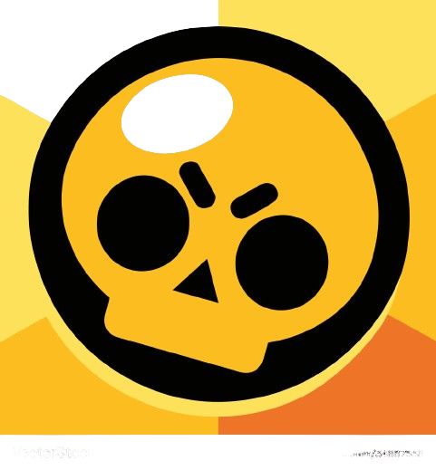
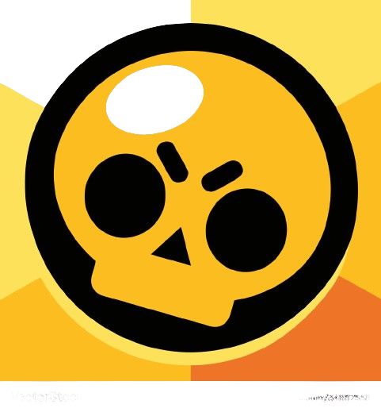

Angel Gómez P.
Mi nombre es Angel Esteban Gómez Palacio, tengo 18 años, soy de Aguachica - Cesar, estudio la carrera de Ingeniería Mecatrónica y me encuentro culminando el tercer semestre académico. Mi fuerte es el cálculo, inglés y la programación.
Mis Pasatiempos
Escritura
- Actualmente me hallo realizando un escrito de fantasía en donde los magos tienen la capacidad de crear los diferentes elementos y manipularlos a su conveniencia. En ella toco temas relacionados a la participación de Dios en la vida de las personas, el cuestionamiento de la moral legal ante los criminales y el manejo correcto del poder.
Videojuegos
- Los tipos de juegos que más disfruto son los juegos de cartas, de estrategia y de peleas. Algunos de los juegos que habitualmente uso son: YuGiOh Duel Links, Legends Of Runeterra, Brawl Stars y Pokemon Blanco 2.
 

Programación
- Uno de los gustos que obtuve en la universidad fue el de la programación. En mis tiempos libres intento mejorar como programador tratando de optimizar lo que más pueda los ejercicios propuestos en clase para tener una mejor lógica de programación. Actualmente sé programar en lenguaje C y en TypeScript.